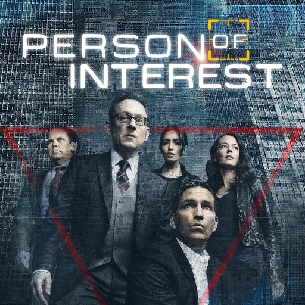

"My Favorite TV Show."
A page about my favorite TV series: Person of Interest.

Person of Interest is an American crime and science fiction series created by Jonathan Nolan. It started in 2011 and ended in 2016, with 5 seasons and 103 episodes.
The story is about Harold Finch, a genius programmer who built "The Machine", a computer system that watches everything and can predict crimes before they happen. Finch hires John Reese, a former soldier and CIA agent, to save the people whose numbers the Machine gives them.
| Character | Actor | Role in the Team |
|---|---|---|
| John Reese | Jim Caviezel | Former CIA agent, the fighter of the team |
| Harold Finch | Michael Emerson | The genius who built the Machine |
| Sameen Shaw | Sarah Shahi | Former government agent, very strong and funny |
| Root | Amy Acker | A hacker who talks with the Machine |
| Joss Carter | Taraji P. Henson | An honest police detective |
| Lionel Fusco | Kevin Chapman | A police detective who helps the team |

Shaw and Reese are my favorite duo in the show. They are both strong, calm, and always ready for action. Their talks are short but very funny.

In the episode before it, the team loses Detective Joss Carter, one of the most loved characters. In "The Devil's Share", John Reese is full of anger and goes to take revenge for her.
Made by a Person of Interest fan © 2026